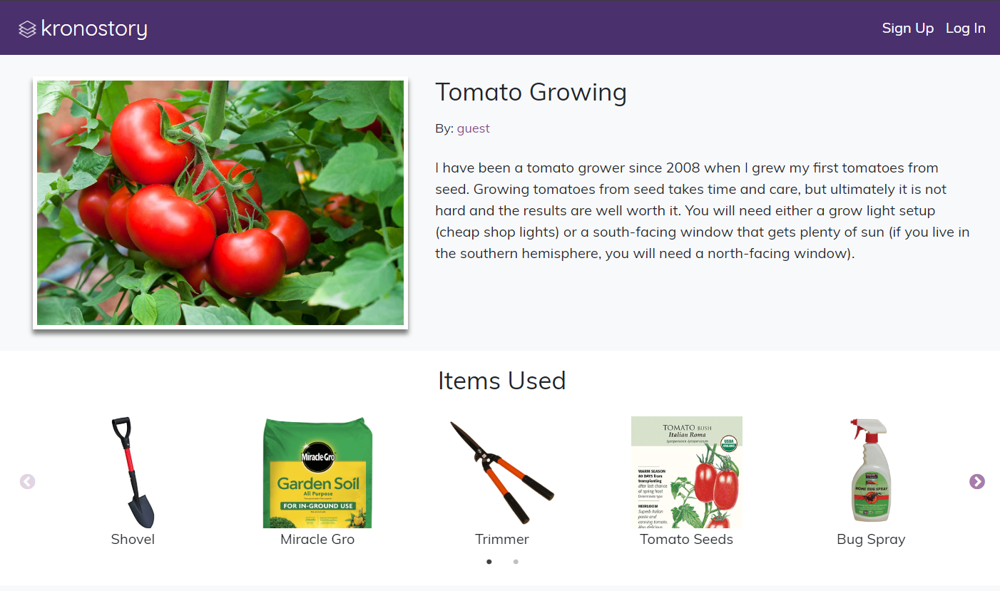
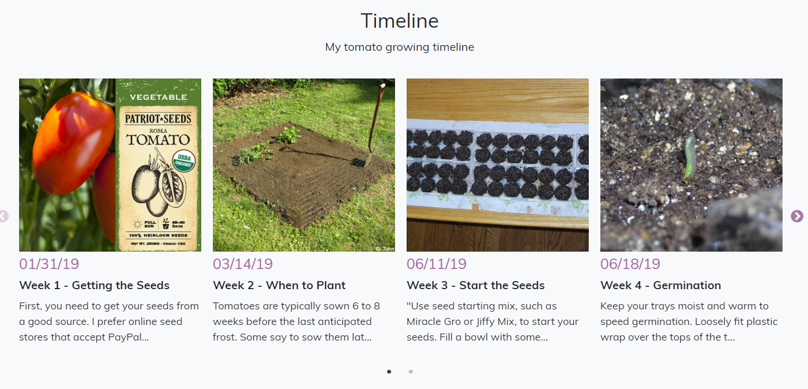

Kronostory - Build Timelines
This app is a blogging/sharing/social media platform for people who like to build stuff up. Such as growing a plant from the seed or building a game from scratch. They can share their progress and tips. People have profiles with their ideas and projects. They can follow other people’s profiles. There will be a timeline to document their process.

The image above shows that you can add items that you used in the project.

This app provides an easy way to upload the progress and also include videos. They can share the progress of them planting a seed to picking the fruit. It can also be used for game building or even building a house. It will be a platform where people can easily communicate with each other and comment on each other’s progress.